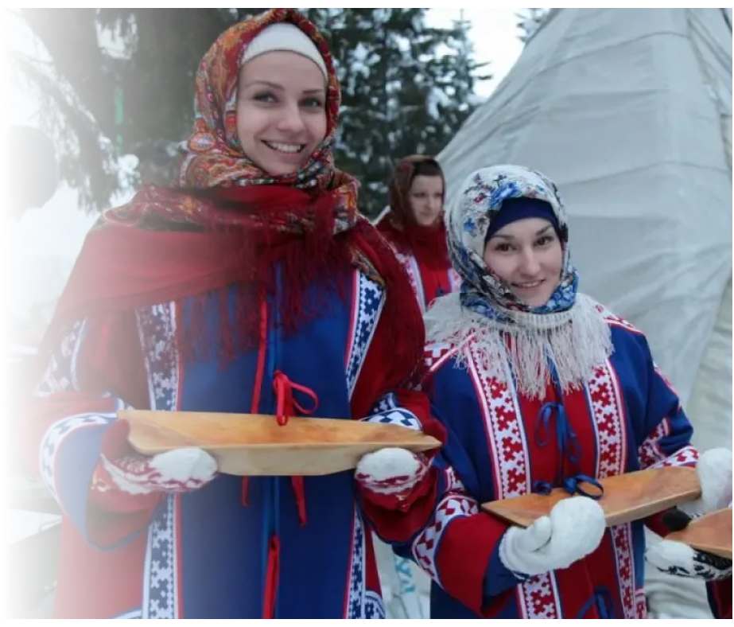
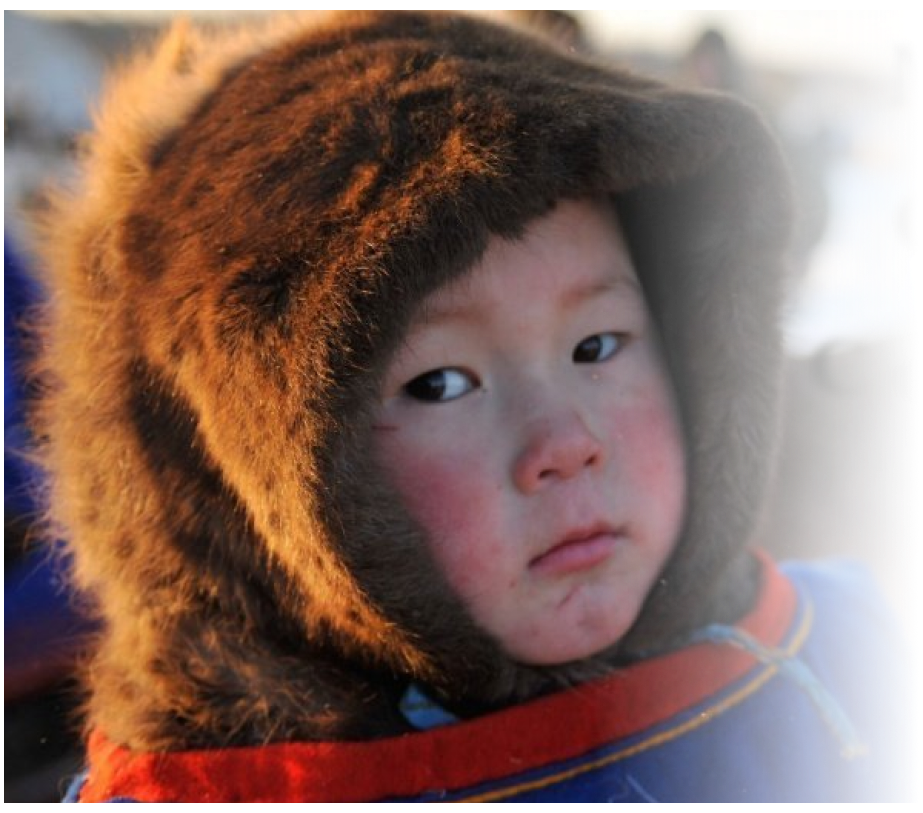
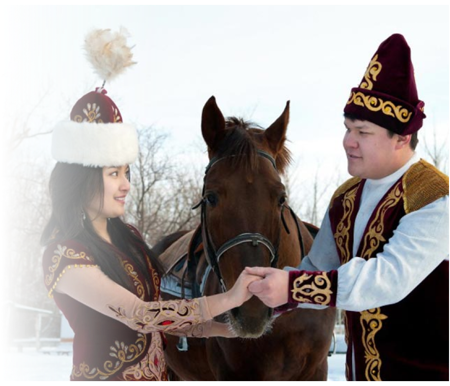
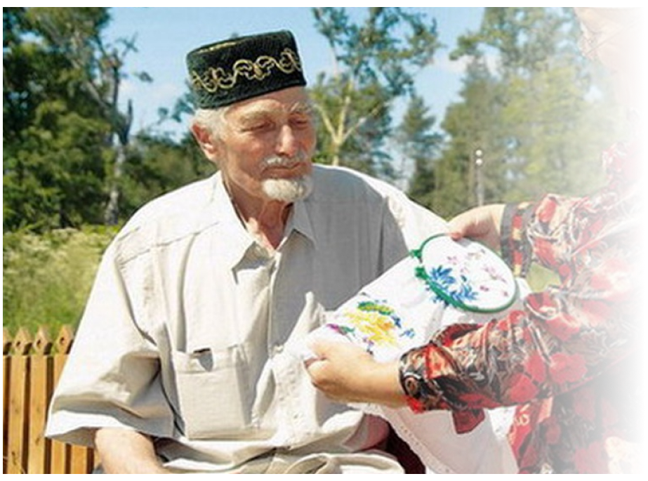

ЯЗЫКИ РЕГИОНА
Обь-Иртышский бассейн — это многонациональный регион, в котором проживают разные народы.
Каждый из них имеет свой язык, отражающий особенности культуры и образа жизни.
Обь-Иртышский бассейн — это многонациональный регион, в котором проживают разные народы.
Каждый из них имеет свой язык, отражающий особенности культуры и образа жизни.

Мансийский язык является близким к хантыйскому и также относится к финно-угорской группе.
Сегодня он находится под угрозой исчезновения, так как число носителей уменьшается.
Пример (Ам омам наме... — Мою маму зовут..)

Хантыйский язык относится к финно-угорской группе языков.
Он используется коренным народом ханты и имеет несколько диалектов. Язык тесно связан с природой и образом жизни народа, особенно с реками, лесами и охотой.
Пример (Ма нємєм Николай. — Меня зовут Николай.)

Казахский язык — один из тюркских языков, используемый казахским населением региона.
Он активно сохраняется благодаря культурным традициям и передаётся из поколения в поколение.
Пример (Рақмет — Спасибо)

Татарский язык относится к тюркской группе языков.
Он широко распространён и имеет богатую культурную и литературную традицию.
Пример (Сәлам! — Привет!)
Диалект — это разновидность языка, которая отличается произношением, словами и выражениями.
Он формируется под влиянием истории, географии и культуры региона.
Диалекты делают язык более живым и разнообразным.
Они отражают особенности жизни людей и помогают сохранить культурные традиции.